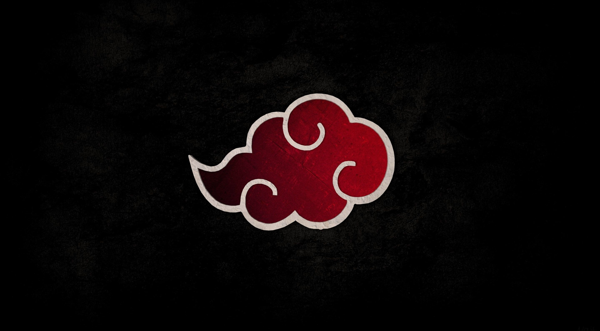
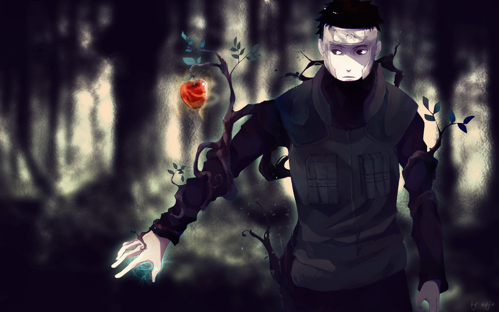
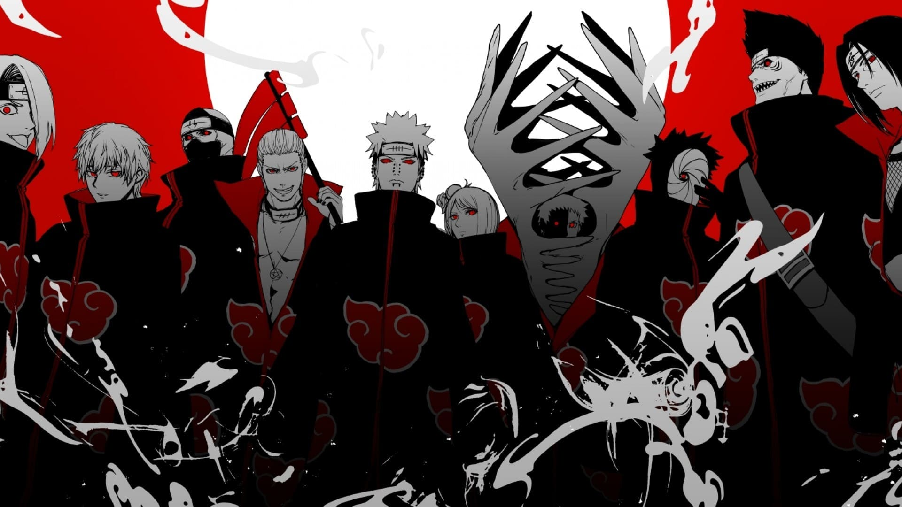
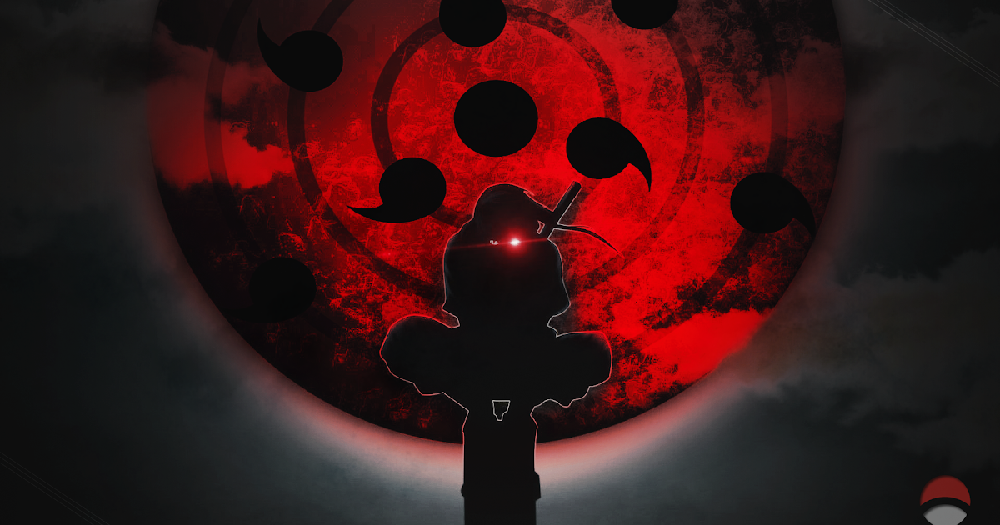

Naruto Shippuden
Q1. Who is the creator of akatsuki?

Q2. Who gave Yamato his element of wood?

Q3. What is the name of Uzumaki Naruto's father?

Q4. Who was the first Akatsuki to perish in battle?

Q5. What two attacks does Itachi have with his Mangekyou Sharingan?
